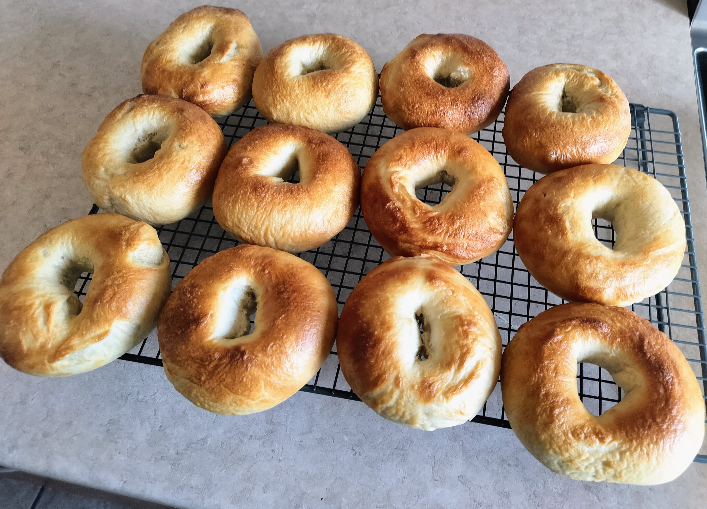

Description
This recipe delivers classic, chewy homemade bagels using a simple, traditional yeast dough. After thorough kneading and a slow rise to develop flavor and texture, the dough is portioned and meticulously shaped by hand. These formed rings are then given a final, brief rest before the crucial cooking steps.
The essential chewy crust is achieved through a critical brief poaching step in boiling water with molasses and baking soda. After boiling, the bagels are immediately baked at a high temperature to develop a deep golden-brown color. This time-honored dual cooking method guarantees a professional-quality bagel, perfect for toasting and serving.
Ingredients
For the dough :
- 1 ¼ cups warm water (almost hot, but not scalding)
- 1 tbsp maple syrup
- 2 ¼ tsp active dry yeast
- 3 ¾ cups all-purpose flour
- 2 tsp salt
For the water bath :
- 1 ½ tbsp molasses
- 2 tsp baking soda
- 6 quarters water
Steps
- In a large bowl, combine the warm water, maple syrup, and yeast. Stir gently and let sit for 5 to 10 minutes, until the mixture becomes slightly foamy.
- Add the flour and salt. Stir with a wooden spoon, then switch to your hands until a ball of dough forms. Transfer the dough onto a lightly floured work surface and knead for about 10 minutes until smooth and elastic. Add a little flour if it sticks too much.
- Place the dough in a lightly oiled bowl. Cover with a clean kitchen towel and let rest in a warm place for 60 to 90 minutes, or until doubled in size.
- Gently punch down the dough with your hands. Divide it into 8 equal pieces (weighing them ensures uniform sizing). Roll each piece into a smooth ball, then poke a hole through the center with your finger and gently stretch it to form a bagel shape.
- Place the shaped bagels on a baking sheet lined with parchment paper. Cover with a towel and let rise for 30 minutes.
- Bring a large pot of water to a boil. Add the molasses and baking soda (it will foam up slightly). Reduce the heat to medium so the water maintains a gentle simmer.
- Drop the bagels into the simmering water, 2 to 3 at a time. Boil for 3 minutes total, flipping them halfway through. During this time, preheat your oven to 450 °F.
- Place the poached bagels back onto the parchment-lined baking sheet. Bake for 14 to 18 minutes, until rich golden brown.
- Transfer to a wire rack to cool slightly before serving.